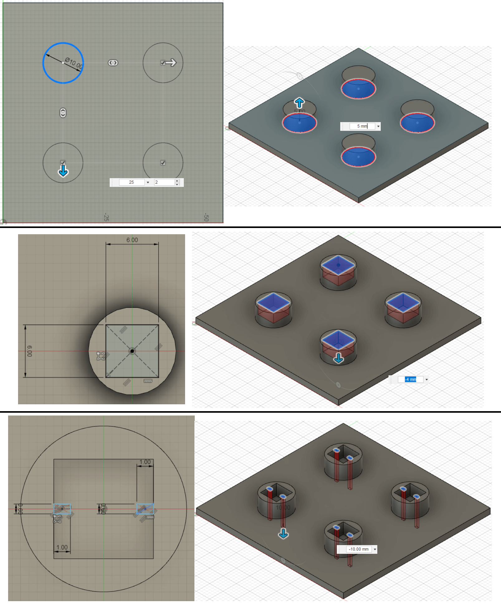

Background
Since young I have always wanted to build a machine that “eats up” money and “spits out” candies or biscuits. Something like a vending machine, but without electricity. I thought of making the whole thing entirely out of recyclables such as cardboard and skewers, however it is not as easy as it seems. Due to the lack of resources (strong glue, nails, workspace) and time, I could not build one. Now that I have the opportunity to craft something as the Final Project in DFAB, I am going to work on it, adding on with the application of Arduino.
Project Idea
Name: SAVEnding (Pronounce as SAVE-vending)
Object: A vending machine with embedded programming using Arduino
Function: Dispense items upon inserting coin and pushing one button
Purpose: To encourage a habit of saving since young, especially if the person tends to overspend
My project will be named SAVEnding because it serves as a vending machine miniature and a coin saving box. My plan is whenever I insert a coin, I can press a button that links to a choice of item that I want, then seeing the item drop. The items which are placed in the dispensing columns must be useful and should ideally be free or cheaper than the value of the money deposited, so that I am more willing to save every time. I want to design a small, simple and portable machine that can function 24/7.
Below shows a sketch of how SAVEnding should work (drawing done using Google Drawing):

Design Inspiration
After searching up for “vending machines using Arduino”, I have come across one that fits my idea. I downloaded the 3D sketch from the website for reference. That design looks complicated at first, but after removing the rail system (which takes up a large part of the building process), it looks much easier to recreate. Picture on the left shows the original project, picture on the right shows my modified version after hiding the rail system parts.

 (Source: https://howtomechatronics.com/projects/diy-vending-machine-arduino-based-mechatronics-project/)
(Source: https://howtomechatronics.com/projects/diy-vending-machine-arduino-based-mechatronics-project/)
Bill of Materials
| Item | Quantity | Source |
|---|---|---|
| Arduino Board | 1 | Found in kit |
| LCD I2C | 1 | Found in kit |
| Breadboard | 1 | Found in kit |
| PCB mounted Push Buttons | 4 | 2 in kit, Got 2 from Mr Chew |
| IR Obstacle Avoidance Sensor | 1 | Got from Mr Chew |
| Continuous Rotation Servo Motor | 2 | Got from Mr Dorville |
| Thick metal wire | Sufficient | $1.50, bought from hardware shop |
| Plywood | 2 pieces of size A1 | FABLAB |
| Dupont wires | Sufficient: Male-to-male, Male-to-female | Some from kit and some from Mr Louis |
Stage I: Computer Aided Design
Step-by-step process
File: SAVEnding_Design.f3d
Troubleshooting
I set my ‘thickness’ parameter to be 5mm and after I was advised to use 4mm plywood, I changed the thickness to 4mm. But many problems arouse, such as missing parts, cutting problems, incomplete cuts. (see image below)

To solve these issues, I did the following:
- I realised my ‘finger height’ parameter is still at 5mm, so I set it to ‘Thickness’. 2 problems remained, and they were resulted from the 2 pieces inside the box.
- I dragged the history marker to and fro about the point of time where the mistake could have happened, and found that the length of the pieces is still “Base-10” while the finger height changed. When I edited the length to “Base-12”, somehow the cutting of the left and right walls is misaligned, so I just extended the finger instead of increasing the length of piece.
- There was another problem that caused the front wall to be partially cut. It is after I clicked to edit a sketch at the front that I realised the wall thickness was set of ‘5mm’ instead of ‘Thickness’.
So after making some adjustments, the problem is finally solved and I am able to cut 4mm plywood!
---UPDATE: there is only 3mm or 5mm plywood to choose from :( so I wasted half a day on making changes to the design and re-aligning my DXF files.---
Stage II: LASER CUT
Saving sketches as DXF files
The design done in Fusion 360 will be sent for laser cutting on 4mm plywood. Because at the start I did not draw each piece within 1 sketch, I will have to create new sketches to save them as DXF files. First, I click on the front face, then create sketch, and pressed ‘P’ to project. The projected sketch is exactly what I would use for vector cutting. I renamed the sketch to ‘front’. I repeated these steps for all unique pieces. Next, I right-clicked on the sketch, and select ‘Save as DXF’. Now my DXF files are ready for vector cutting.
Aligning & Troubleshooting
But wait. Before I cut, I must first align the pieces to reduce wood wastage. A huge mistake lies in the dimensions of my pieces. Even if I use A1 plywood, the maximum number of large pieces I can fit is only 2. If I were to print all 6 sides of SAVEnding together with the remaining smaller pieces, it will leave a lot of unused wood. So I had to scale down on one parameter, which is the width. When I reduce it from 30 to 28cm, there are no errors (yay!), the only problem is the space for the servo motors at the back. It’s ok, I shortened a supporting plate and the divider too and problem resolved!
But when I stepped into Fablab, Mr Chan told me that the thickness of the plywood is only 3mm and 5mm. Furthermore, the work area is 800mm × 600mm, so I just sat in Fablab for hours just to change some parameters and redesigning some plates. Redesigning because I spotted the mistake I made while designing the divider (see above). The final layout is shown below.

It's Cut o'clock!
I saved these as DXF and send it to CorelDraw to laser cut. First, I made sure the line weight is Hairline and the colour is RGB (255, 0, 0). Then I go over to preferences and adjust the settings. However, the cutting took a few times to cut through, as I increased the power and decrease the speed (might be due to dirty lens). Here's a video of the cutting process:
Stage III: 3D Print
Initially I wanted to mount the 4 push button switches onto stripboard, then design and 3D print 4 buttons that sit loosely on the holes cut on the front piece. However, I figured it may be difficult to assemble as I need to find a way to secure/mount the stripboard onto the back of the front piece, along the process the buttons may keep falling out. After discussing with Mr Chew, I decided to print a holder that allows the switches to sit in perfectly, and the convenience of keeping them in place for soldering.
I designed a flat surface that serves as a bed for all the small holders. Each holder is made up of a cylinder of ⌀10mm × 5mm (that’s the thickness of plywood it has to pass through), a negatively extruded cuboid of 6mm × 6mm × 4mm (those are the dimensions of the switches), and 2 little holes for the wires.

However, I forgot to consider about the tolerance and went ahead to print. The switches cannot fit at all so this print had gone to waste. Mr Yeo tried to help by melting the holder and forcing the switch to fit (picture on the right), but I remembered that the deformed cylinder might mean not being able to fit the plywood. Hence, I had to test print different lengths of the square, i.e. 6.10mm, 6.15mm, 6.20mm, followed by another test of 6.30mm, 6.40mm. Instead of the whole thing, I printed out just 1 mini holder. The switch can finally fit perfectly in for 6.4mm.
Stage IV: Embedded Programming
Circuit Planning
With reference to the circuit schematic from How To Mechatronics, I removed all the components related to the rail system and took away 2 continuous servo motors to save some assembling time. Before I designed my own schematic diagram using Tinkercad I did a sketch to have an idea of how many connections do I need (credits to Mr Chew for helping me out). Tinkercad does not have LCD I2C, so I will treat the last 2 connection points as SDA and SCL of I2C.
Writing the Program
I copied the code from How To Mechatronics and removed all the codes related to the rail system. That saves me about a hundred lines. Since I am using an LCD I2C, which uses almost the same code as LCD, I downloaded the library from here and replaced it with the original LCD library. After I am completed with the final assembly, I made some changes to the code for servo motors [write()] and redefine the pins connected to each component [#define].
Testing the Circuit
I connected all my components onto my Arduino Board and tested the circuit. There were many mistakes made. I managed to resolve these issues after a good 3 hours of troubleshooting, with the help from Khairin, Mr Dorville and Mr Louis.
What happened? When I uploaded my sketch, the LCD was blinking rapidly at “Insert a coin!”. Then I added in the breaks to each switch (var) {case} and uploaded again. However, nothing happened when I clicked on all 4 buttons. Mr Louis pointed out that the VCC and GND of the servo motors are connected to the wrong side of the breadboard. When I finally wired everything correctly, one of the servo motors did not work. I did not conduct checks to ensure all components are functional, thus I had to find a code to test the servo motors.
First, I picked the sample sketch from Arduino IDE to perform a simple sweep for one of the servo motors. I define the digital pin that is connected to it, then upload the code. That motor spun, so it is functional, and the wires do not have problem. I unplugged the motor from the dupont wires (connected to breadboard) replaced it with the other motor. It did not spin, so I took it out and adjusted the wires, but it still did not work. That was how I determined that motor is faulty.
I got a new servo motor, a functional one, and tried the circuit again. It works! I forgot to film a video of how the circuit works, but here are some pictures of the process. (Click to zoom in)

{kind=link}
{kind=link}
{kind=link}
{kind=link}
Stage V: First Assembly
I tried putting all the pieces together but just as I reached the last piece (front), it could not fit! Turns out that the orientation of the internal plates is upside-down, causing the rest to fit in the wrong orientation as well. And because back when I designed the structure, I did not follow what was taught, all the pieces are asymmetrical. Therefore, I had to refer to Fusion 360 to match the orientation.
Stage VI: Miscellaneous – More laser cutting
Engraving
The top of the structure looks bare, so I thought “why not give it a nice touch?” I took the DXF file of top piece, launched CorelDraw in T1442, and placed the word “SAVEnding” in the centre. I set the the text to RGB Green and selected the text for raster engraving. The result is awesome!
Coin Guide
1 problem that surfaced while using the IR Obstacle Avoidance Sensor is: The coin will go undetected because the free fall of that metal object is too fast to be detected. I drew up a sketch of a coin guide, then used Fusion 360 to design the 3D structure. As this coin guide is quite tall/long (about 16cm), it will take too long to 3D print, hence I did laser cutting on upcycled acrylic pieces.
{kind=link}
{kind=link}
I set the settings wrongly and the acrylic (red) was not cut through after 2 times. I tried to break along the lines but spoiled it instead. Then I took another acrylic (transparent) and cut again with the correct settings. The problem lies in taking the acrylic of wrong thickness, which caused the coin to get stuck. The red acrylic is 2.5mm but I needed 3mm. Separating 2 pieces of acrylic held together by chloroform may destroy them, plus the laser cutter was in use, so I took a thin acrylic scrap (white) and stacked on top of the red acrylic and secured all the pieces together using chloroform.
Coin_Guide.f3d
Stage VII: Final assembly
Due to time constraint and the lack of experience, I asked Mr Louis to help me with the soldering of the wires connecting to the push button switches. I hot-glued some pieces together and brought SAVEnding home to assemble the motors, sensor and the wires. Before I begin the assembly, I drew out the layout design of how the wiring connnections should look like.
{kind=link}
{kind=link}
{kind=link}
{kind=link}
- I used dupont wires to extend the connections from all the components to the breadboard and Arduino.
- I secured the servo motors onto the holder using the given screws and my mini screwdriver.
- I made 2 helical coils using the thick wire bought from a nearby hardware shop and a kitchen towel roll. However, I did not have hot glue or strong tape to attach the coil to the wing of servo motor, so I made do temporarily with threads and tape.
- I secured the LCD using an electrical tape and fitted in my 3D-printed button holder onto the back of the front piece.
- Positioning the IR Obstacle Avoidance Sensor is challenging as I ponder whether to secure it on an elevated platform on the base or front piece. Taking the distance and the limited resources I have into consideration, I stuck some leftover acrylic scraps and the failed 3D print (button holder) onto the back of the front piece.
- Plugged back in the wires that I took out the previous day to finish connecting all components to the Arduino Board.
- Connected the Arduino to my laptop and tested out. Dropped a coin down the coin guide and adjusted the potentiometer behind the sensor accordingly.
- Then the problem came; there is no response when I clicked on the buttons. Tested the servo motors using the example sketch and they are working. Could not figure out what was wrong, so I had to bring it to school to finish the assembly. Turns out the dupont wires are loose and are not totally secured in the Breadboard. (Main culprit is not keeping the wires neat.)
- Glued the rest of the pieces together except the front one. Also secured the Arduino Board and the sensor using hot glue.
- I rewrote the code for servo motor to change the speed/duration and uploaded again. All set and ready to present!
(ensure the resolution is 1080p.)
Stage VIII: Presentation
I finished assembling every part and made the last changes to the code on my presentation day. It's time to test it out! At the start, everything is working well, however after my friends used it multiple times, I noticed the LCD will turn off for a brief moment when the servo motor is rotating. Could it be the current or voltage passing through the LCD is reduced?
Possible Developments in the Future
These are some improvements I can make to SAVEnding. Due to shortage of time, I am only able to create a functional machine that detects coins and dispense items.
- Changing the angle of the coin guide (middle layer) by about 5° – so that it will roll off on its own without tilting the structure
- Extend the length of wires by soldering instead of using dupont wires and replacing the breadboard with a stripboard. I also need to secure the wires along the walls of the structure, to keep them neat and presentable.
- Installing a window panel and push cover at the front
- Placing a coin box, possibly enclosed with a lock, at the end of coin guide to store the coins
- Adding 2 more servo motors – I have left 2 dispensing slots in the structure and 2 pins of the Arduino empty. All 4 switches are there, I can just re-program anytime.
- Detection of different coins – separating them by sizes
- Write a code that rotates the servo motors in the opposite direction when repeatedly clicking on one of the buttons – this will make replenishing the items more convenient as the room for the hand and items is insufficient.